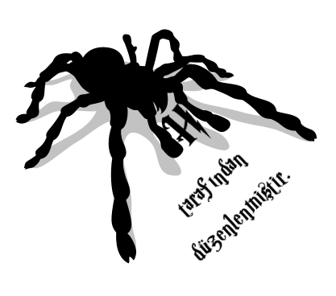

J. K. Rowling'in
YKY'deki kitapları:
Harry Potter ve Felsefe Taşı (2002)
Harry Potter ve Sırlar Odası (2002)
Harry Potter ve Azkaban Tutsağı (2002)
Harry Potter ve Ateş Kadehi (2001)
Fantastik Canavarlar Nelerdir, Nerede Bulunurlar? (2002)
Çağlar Boyu Quidditch (2002)
Harry Potter ve Zümrüdüanka Yoldaşlığı (2003)
Harry Potter ve Melez Prens (2005)
Harry Potter ve Ölüm Yadigârları (2007)
Ozan Beedle'ın Hikâyeleri (2009)

Fotoğraflayan: BBUURRCCUU
OCR: spiderh
E-kitap Düzenleme: spiderh